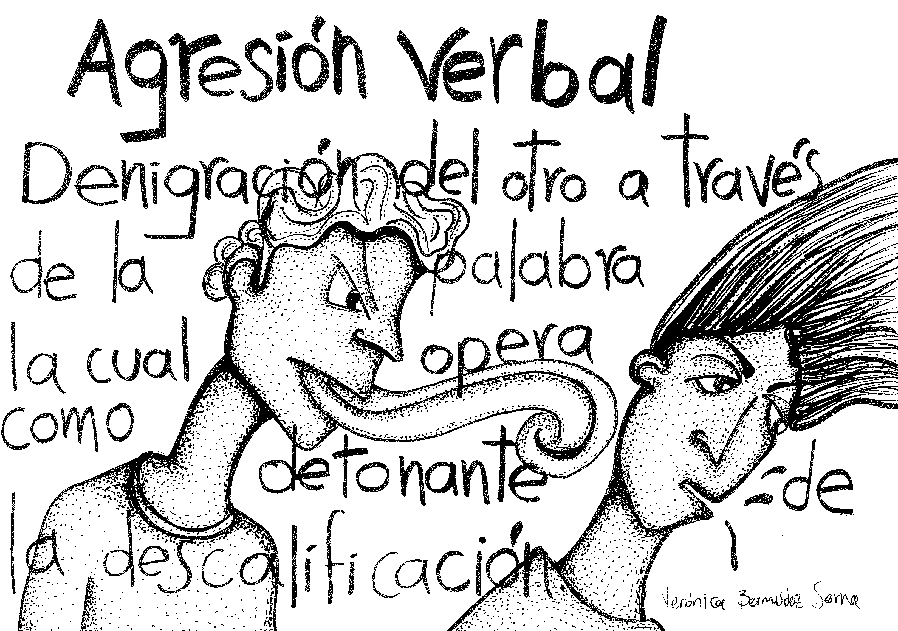
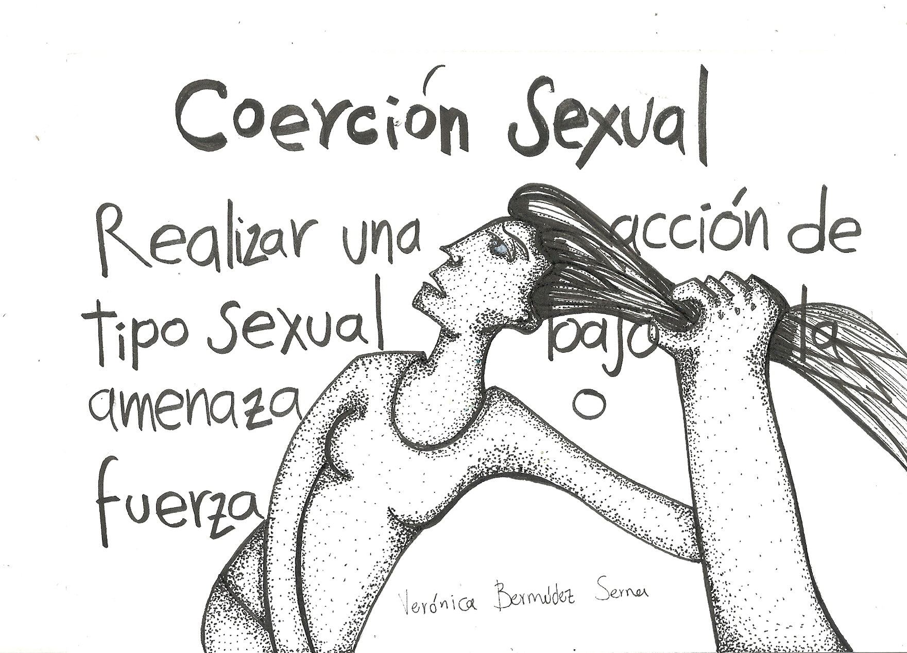
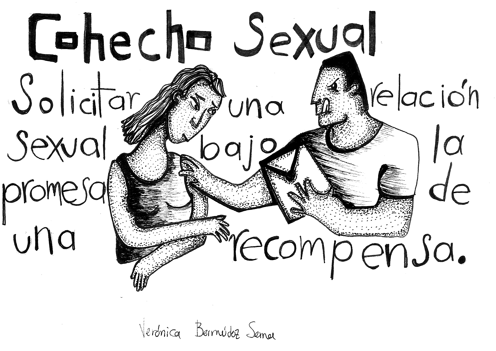
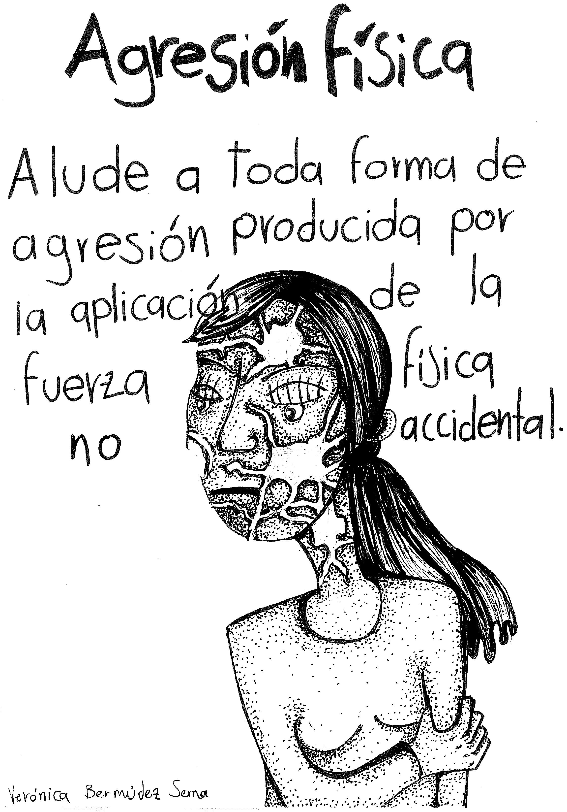
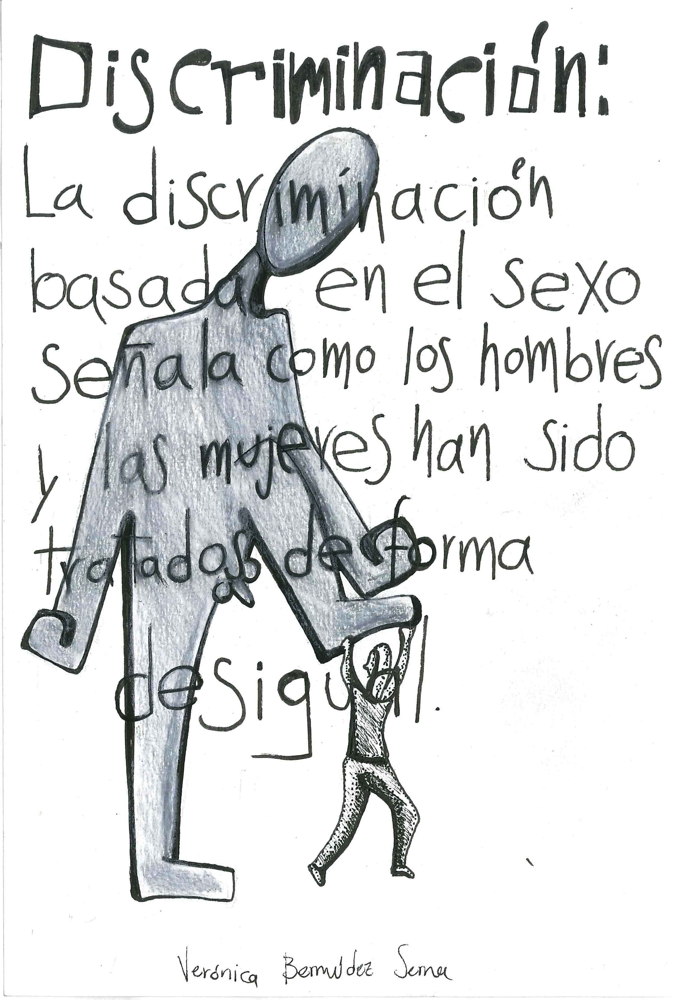
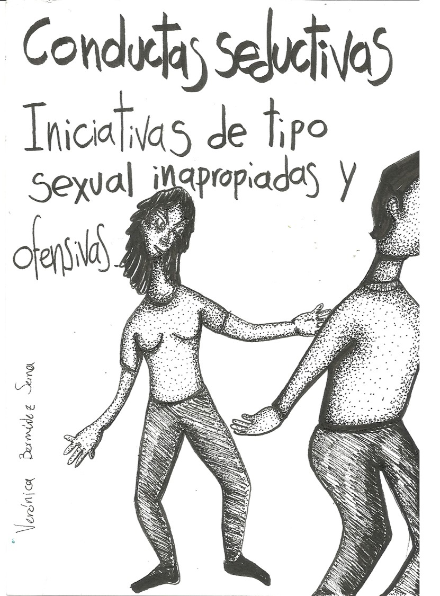
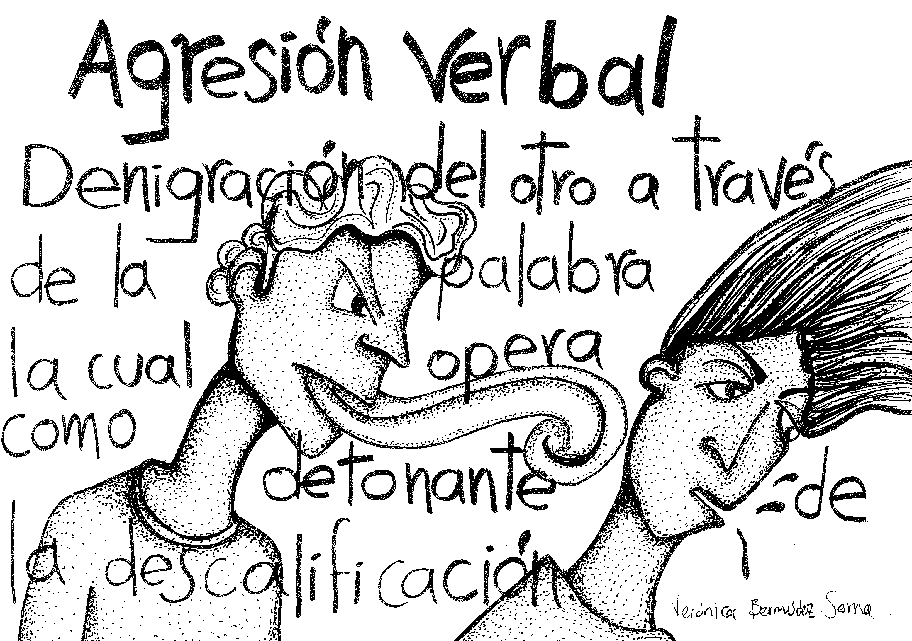
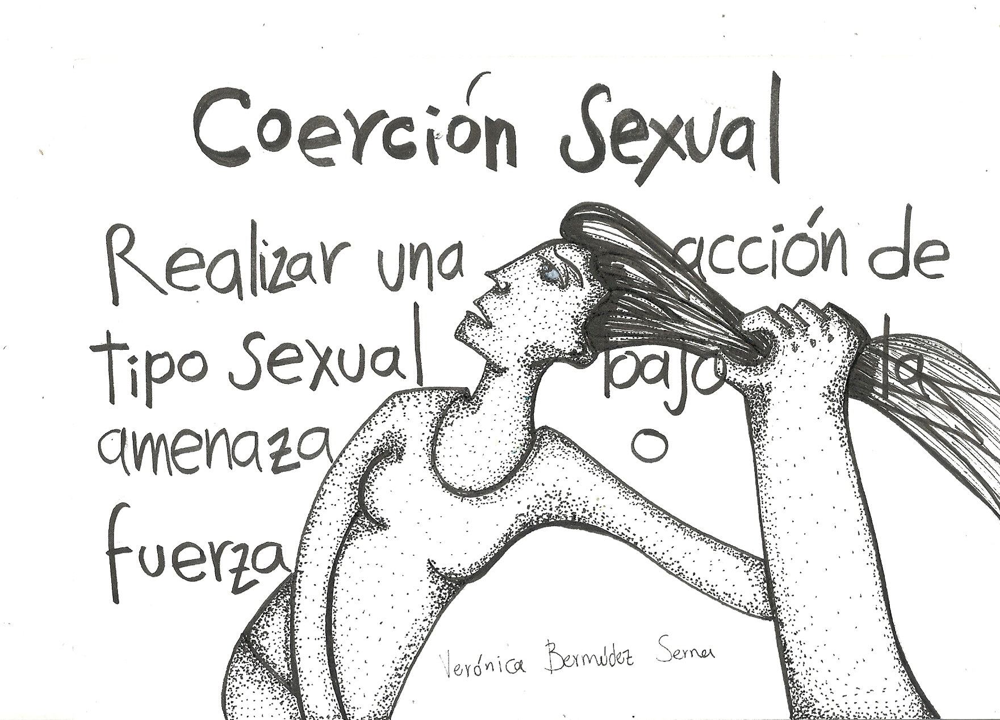
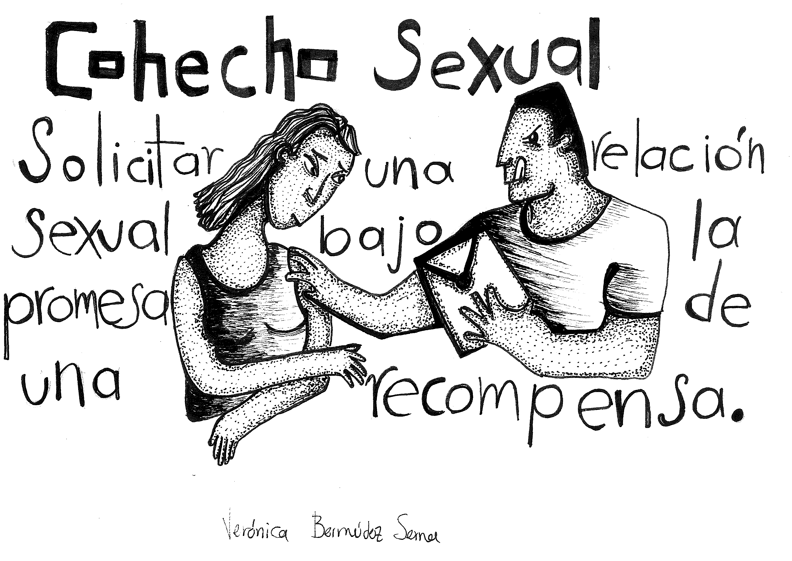
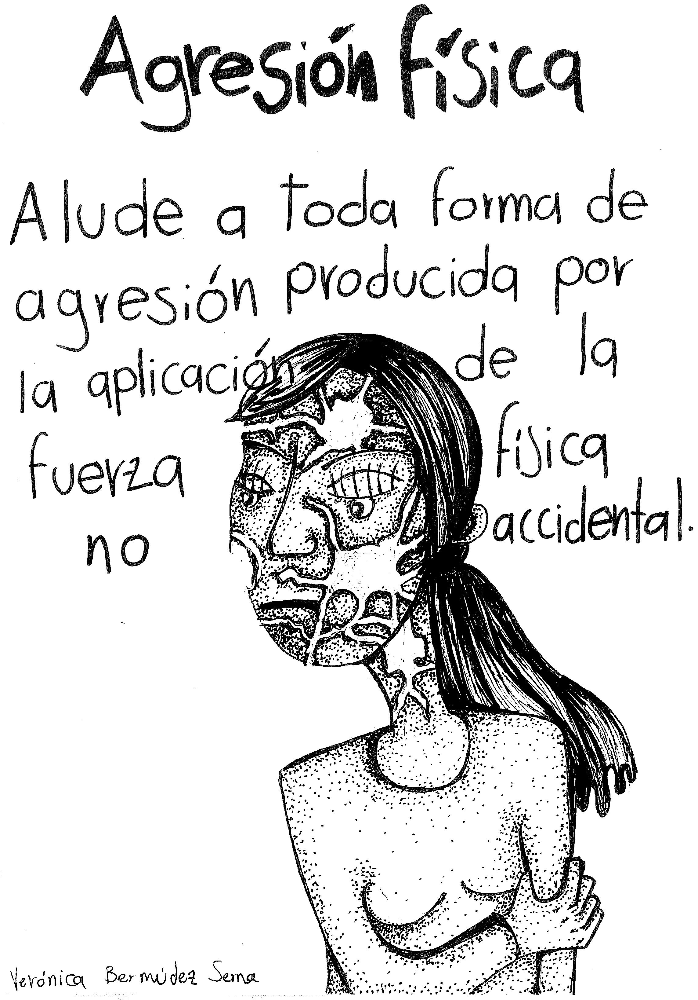
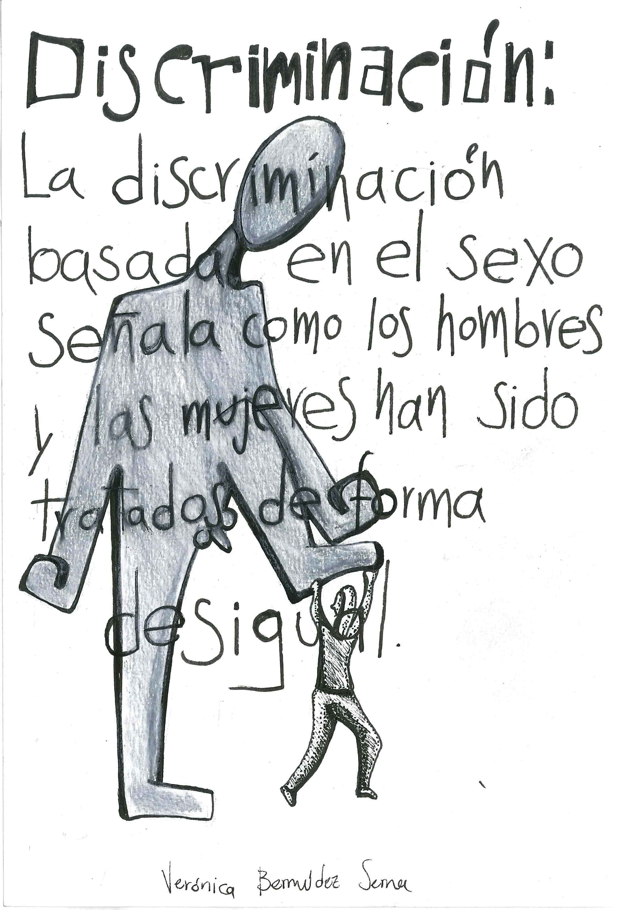
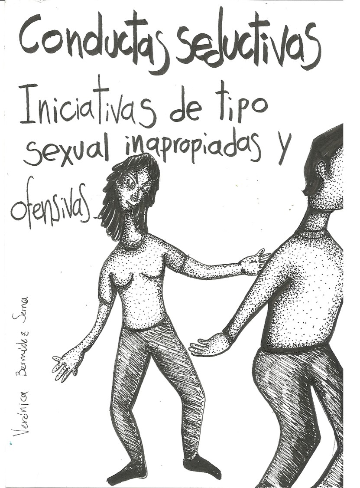
Violencia Económica
Corresponde a cualquier acción o acciones (sean estas directas o mediante la ley) que buscan una pérdida de recursos económicos/patrimoniales mediante la limitación (por ejemplo, las mujeres no pueden tener propiedades o hacer uso de su dinero o de sus derechos patrimoniales).
Este tipo de violencia contra las mujeres es una de las más comunes, incluso en países con alto índice de desarrollo humano (IDH), e incluye todo tipo de acto que genere limitaciones económicas con la intención de controlar el dinero o privar de medios económicos para vivir de forma autónoma.